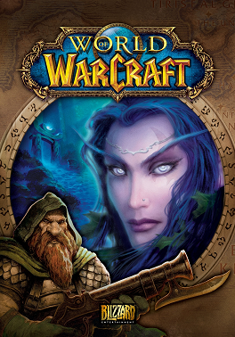

A Intro to WoW
World of Warcraft, often abbreviated as WoW, is a captivating and immersive online multiplayer role-playing game that has enthralled millions of players worldwide since its inception in 2004. Developed and published by Blizzard Entertainment, this iconic fantasy realm has become a cultural phenomenon, transporting players to the enchanting and ever-evolving continent of Azeroth. In this vast and dynamic virtual world, adventurers embark on epic quests, engage in fierce battles, and forge alliances with fellow players, all set against a backdrop of rich lore and stunning landscapes. With its intricate storytelling, endless customization options, and a dedicated community of players, World of Warcraft has solidified its status as a cornerstone of the gaming universe, offering an unparalleled experience that continues to evolve and captivate players of all backgrounds and interests.
The World of Azeroth
Azeroth, the fantastical and ever-evolving world at the heart of the World of Warcraft universe, is a realm of boundless wonder and adventure. This sprawling continent is a canvas painted with diverse landscapes, from dense, ancient forests to scorching deserts, snow-capped mountains, and mystical jungles. But Azeroth is not just a land of natural beauty; it's a world teeming with rich lore, inhabited by a multitude of races and factions, all with their unique stories and motivations. From the epic struggles of the Alliance and Horde to the ancient mysteries of the Titans and the looming threats of malevolent forces, Azeroth offers players a captivating tapestry of exploration, conflict, and magic, making it a timeless epicenter of online gaming.